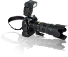
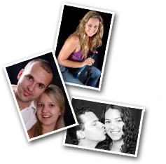
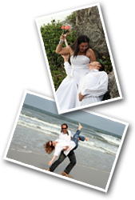

A Von Muller Foto e Vídeo Digital empresa que atua no ramo de coberturas de eventos sociais, estúdio e publicidade com um know-how de anos de prática e experiência na área de fotojornalismo e books fotográficos, prioriza atingir excelência e qualidade em todos os serviços prestados para seu clientes.
Atuando com uma equipe de profissionais qualificados e equipamentos de alta tecnologia oferecemos prestação de serviços com competência e eficiência, valorizando o seu evento ainda mais com a cobertura fotográfica dinâmica e ágil, sem perder nenhum detalhe.
|  |
|
| Fotografias de alta definição produzidas com equipamentos profissionais, disponíveis após 48 horas para visualização e conferência. Todas as imagens são tratadas através de softwares de edição gráfica aumentando ainda mais a qualidade do registro dos eventos. |
|
 |
| Filmagem digital com equipamentos de qualidade e pessoal treinado e capacitado para cobertura do evento. Edição profissional, personalização de dvd com menu interativo e capa personalizada. |
|  |
|
| Fotos de alta qualidade produzidas em nosso estúdio. Com horário marcado, a sessão é feita sob a supervisão de um acompanhante e permite ao cliente uma variedade de possibilidades com acessórios e maquiagem incluídas. Todas as fotos são tratadas antes de impressas e o cliente conta com várias opções de tamanho e tipo de encadernação. |
|
 |
| Um ensaio feito na praia, cidade ou campo. Fotos descontraídas e espontâneas capturadas de forma a manter a emoção do momento. Feitas para ocasiões especias como casamentos, as fotos são utilizadas para montagem de poster e clipes. |